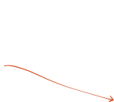
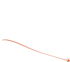

Exploring imbalanced Fermi gases
with stochastic quantization
Doctoral Defense, Lukas Rammelmüller
December 16, 2019

Fermi gases
are everywhere
quantum chromodynamics
nuclear physics
electrons in metals
neutron stars
cold atom experiments

s-wave interaction

dilute: particle spacing $\gg$ interaction range
cold: thermal wavelength $\gg$ interaction range
kinetic part

interaction part

$$ \hat H = -\sum_{s=\uparrow,\downarrow} {\int{\!d^dx\ {\hat{\psi}_{s}^{\dagger}(\vec x)} \left(\frac{\hbar^2\vec{\nabla}^2}{2 m_s}\right)\hat{\psi}_{s}(\vec x)}} +\ g\int{\!d^dx\ {\hat{\psi}_{\uparrow}^{\dagger}(\vec x)} \,\hat{\psi}_{\uparrow}(\vec x)\,{\hat{\psi}_{\downarrow}^{\dagger}(\vec x)} \,\hat{\psi}_{\downarrow}(\vec x)} $$

+ Trotter decomposition
+ Hubbard-Stratonovich transformation
$$ \langle \hat{\mathcal{O}}\rangle = \frac{1}{\mathcal{Z}} \int{\!\mathcal{D}\phi\ \mathcal{O}[\phi]\,\mathrm{e}^{-S[\phi]}} \equiv \int{\!\mathcal{D}\phi\ \mathcal{O}[\phi]\,P[\phi]} $$
stochastic evaluation:
$$ \langle \hat{\mathcal{O}}\rangle \approx \frac{1}{N}\sum_{i=1}^N \mathcal{O}[\phi_i]$$


probability measure of a d-dimensional Euclidean path integral as
equilibrium distribution of a d+1-dimensional random process
$\langle\eta_t\eta_{t'}\rangle = 2\delta(t-t')$
(not physical)

not positive (semi-)definite
for imbalanced gases
$\mu_{\uparrow} \neq \mu_{\downarrow}$
$m_\uparrow \neq m_\downarrow$
complex Langevin for nonrelativistic fermions

[Berger, LR, Loheac, Ehmann,
Braun, Drut; arXiv (2019)]
from few to many in 1D

[LR, Porter, Braun, Drut. Phys. Rev. A (2017)]
mass-imbalanced EOS

[LR, Porter, Drut, Braun; Phys. Rev. D (2017)]
[LR, Drut, Braun; J. Phys. Conf. Ser. (2018)]
pairing with spin & mass imbalance

[LR, Drut, Braun; in preparation]
polarized unitary fermions

[LR, Loheac, Drut, Braun;
Phys. Rev. Lett. (2018)]
$a_S \gg n^{-1/3} \gg r_0$
[Ho '04]
[
Regal,Greiner,Jin '04;
Zwierlein et al. '04;
Kinast et al. '04;
Shin,Schunck,Schirotzek,Ketterle '08;
Chin,Grimm,Julienne,Tiesinga '10;
Nascimbène et al. '10;
van Houcke et al. '12;
Ku,Sommer,Cheuck,Zwierlein '12;
Carcy et al. '19; Mukherjee et al. '19;
...
]


temperature
polarization

[Fulde,Ferell '64; Larkin,Ovchinnikov '65;
Sarma '63; Liu,Wilczek '03; Bulgac,Forbes,Schwenk '06]
[Combescot,Recati,Lobo,Chevy '07;
Schirotzek,Wu,Sommer,Zwierlein '09;
Nascimbène et al. '10; Yan et al '19]
[mean-field: Chandrasekhar '62; Clogston '62;]
[exp: Shin et al. '08; Navon et al. 10']
[FN-DMC: Lobo,Recati,Giorgini,Stringari '06]
$\mu = \frac{\mu_\uparrow + \mu_\downarrow}{2}\quad\ $ $h = \frac{\mu_\uparrow - \mu_\downarrow}{2}$

$\mu = \frac{\mu_\uparrow + \mu_\downarrow}{2}\quad\ $ $h = \frac{\mu_\uparrow - \mu_\downarrow}{2}$
[balanced $T_c$: Ku,Sommer,Cheuck,Zwierlein '12;
Nascimbene et. al '10; Nascimbene et. al '11]

with experiment and other methods!
finite lattice $V = 11^3$
($\lambda_T \ll V^{1/3}$ must be fulfilled)
[DHMC: Drut,Lähde,Wlazlowski,Magierski '12]
[Luttinger-Ward: Frank,Lang,Zwerger '18]


density & magnetization
equations of state
$$n(\beta\mu,\beta h) = \frac{1}{\mathcal{Z}}\frac{\partial\mathcal{Z}}{\partial (\beta \mu)}$$
$$m(\beta\mu,\beta h) = \frac{1}{\mathcal{Z}}\frac{\partial\mathcal{Z}}{\partial (\beta h)}$$
pressure & energy
$$P(\beta \mu) = \frac{1}{\beta}\int_{-\infty}^{\beta\mu}{n(x)\ dx} \qquad E = \frac{3}{2}PV$$
compressibility & specific heat
$$ \kappa_{\mathrm{T}} = \frac{1}{n}\left[\frac{\partial n}{\partial P}\right]_{\beta h, T, V} \qquad C_{\mathrm{V}}/N = \left[\frac{\partial E}{\partial T}\right]_{N,V} $$
 

spin susceptibility
$$\chi = \left[\frac{\partial m}{\partial(\beta h)}\right]_{\beta\mu, T, V}$$

suppression of $\chi$ for $T > T_C$


summary
complex Langevin is a valuable tool
to study ultracold Fermi gases
EOS, magnetic properties & response accessible
for the unitary Fermi gas at finite temperature and polarization
matches state-of-the art results
and provides experimentally testable predictions
for previously inaccessible quantities